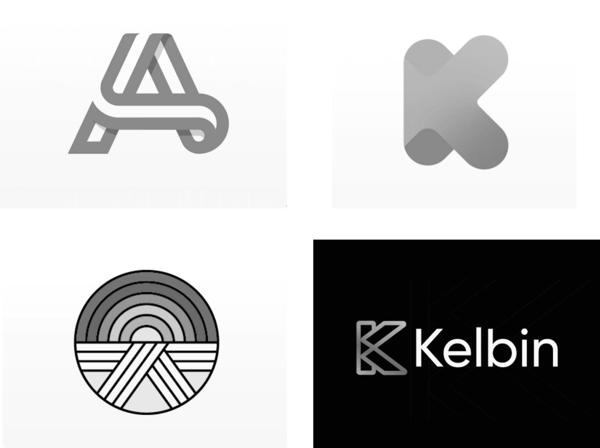
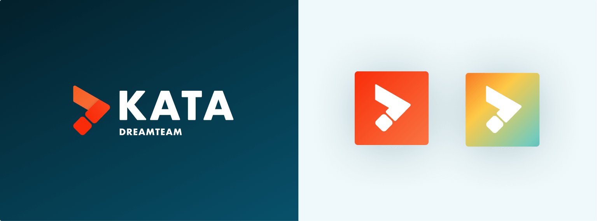
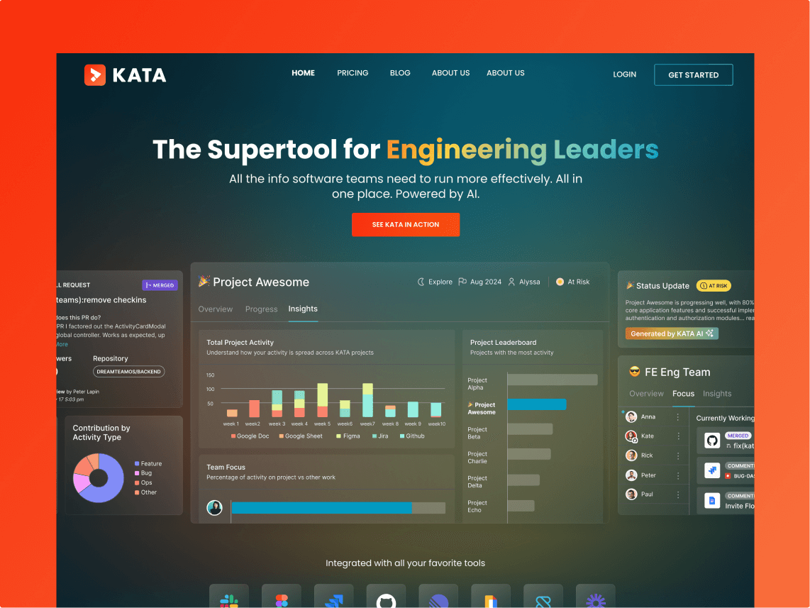
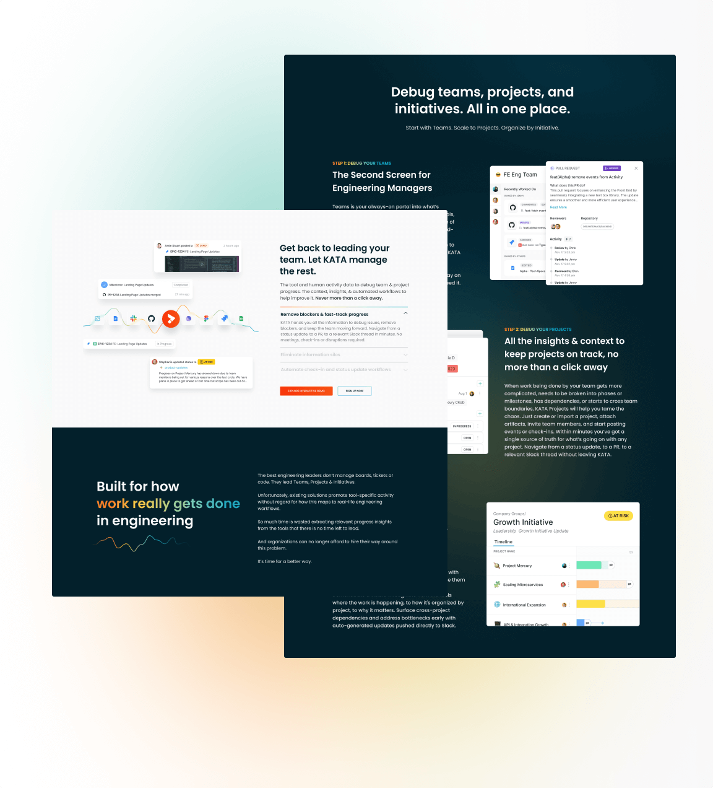

PROBLEM
New Brand Identity
KATA, a B2B SaaS application, serves as a crucial tool for engineering leaders, offering unparalleled visibility into projects and teams progress. However, amidst feedback from both customers and investors, confusion arose regarding the distinction between our flagship product, KATA, and our overarching company, DreamTeam. In a proactive move to mitigate any potential friction, we opted to sharpen the focus on our KATA brand identity. Starting with a distinct and compelling logo.
RESEARCH
Mixing Old and New
In refining the KATA brand, we sought to infuse it with DreamTeam's distinguished attributes: elevated, inspirational, intelligent, transparent, and focused. We also wanted to forge a connection between the brand and the essence of its namesake, 'KATA,' a Japanese term evoking a choreographed pattern of martial art movements. The intention was to seamlessly integrate these qualities and the elements of the product into the fabric of KATA's identity, crafting a brand identity that resonates deeply with our audience while staying true to our core values and purpose.

DESIGN
Expand and Simplify
During our research, one concept emerged as particularly striking: the karate belt. Its symbolism resonated deeply with the fluid nature inherent in software development, as the overlapping elements mirrored the iterative nature of the process. Notably, the belt's illustration, when tied, bore a resemblance to the letter 'K' and formed an arrow within the negative space. These elements were intertwined to convey the essence of progress and direction within project management. Through various iterations, we simplifed the design while accentuating its capacity to symbolize focus and advancement, ultimately culminating in a logo that encapsulates the spirit of KATA and its mission.
OUTCOMES
Final Logos, Usage, & Metrics
After implementation, we saw significant increase in the following metrics:
Website bounce rate decreased 29%
Organic Traffic increased 575%
Time on page increased 68%
Visitor to lead conversion rate increased by 3%


